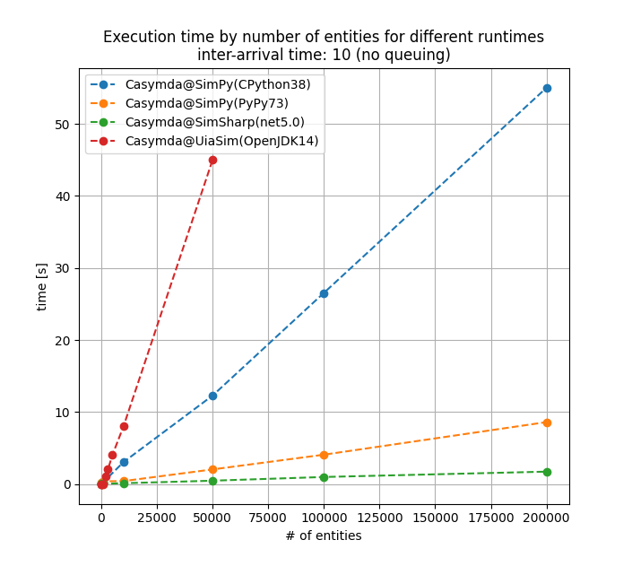
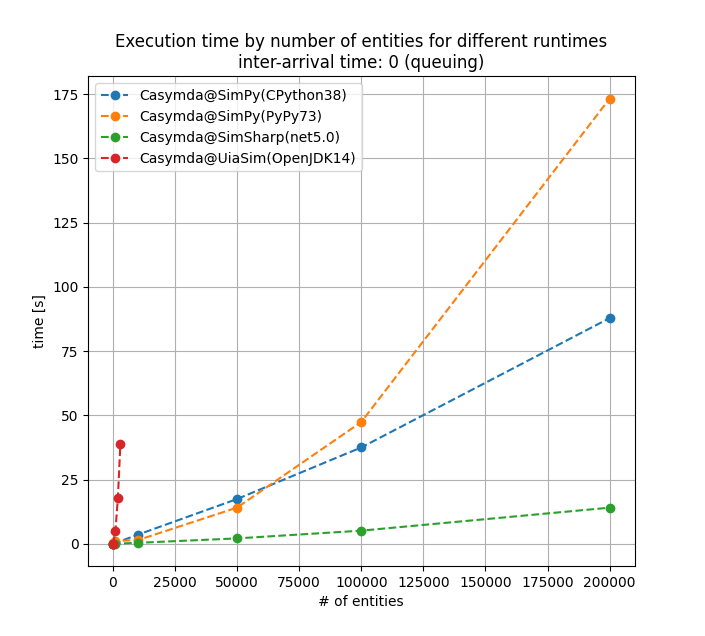

Block-based Modeling with SimPy - in Java & C#
Performance Comparison of Casymda-Ports for Uia-Sim and SimSharp

When creating Python-based simulation models with Casymda / SimPy, a frequent remark is that Python - being a slow, dynamic, interpreted language - would be a bad choice for this type of endeavour.
So could compiled, statically-typed SimPy alternatives make model execution faster, therefore being a better choice for development?
This post will have a look at Uia-Sim and SimSharp, two SimPy ports for discrete event simulation in Java and C#. As a proof-of-concept, two small block-based modeling libraries were created, similar to Casymda for SimPy, and their execution speed was compared with help of a simple benchmark model.
Uia-Sim: SimPy for Java
Uia-Sim is a recently published Java port of SimPy, published by UIA Java Solutions. Since Java does not provide generators/coroutines out of the box, the creator developed a “yield-like API” to enable blocking and resuming of simulation processes with help of threads.
Based on Uia-Sim, a Casymda-like library for block-based composition of discrete event simulation models was created as a proof-of-concept. Csa4j implements some of the ideas from Casymda:
- a
Blockas the basic class to compose simulation models- is executing processing logic for received entities, and forwarding to successor-blocks
- can be extended for custom processing logic (e.g. elapsing time, as
Delay)
Source-blocks spawn entities and initiate their processingSink-blocks end entity processing and cause removal from the simulation- basic animation capabilities can visualize the entity flow between model blocks for debug / presentation
As an improvement over Casymda, animation-related behavior and data was properly seperated from the simulation-related behavior of basic blocks, which just provide notifications whenever block-states change or entity movements occur.
Similar to Casymda’s debug animation based on Tkinter, corresponding visualizations can be created in Csa4j with JavaFX.
While browser-based animation was out of scope for this PoC, the multitude of existing (micro-) web-frameworks for Java would make it easy to provide corresponding functionality.
Further missing features which are present in Casymda include the parsing of .bpmn files to generate simulation model classes, the state-tracking of blocks, and tilemap-movements.
The project uses a basic gradle setup with Java 14 and JUnit-tests. Coverage info and static code analysis can be obtained with help of jacoco, sonarqube, and a sonarqube gradle plugin. Since Uia-Sim seems to be not yet available via maven-central, this dependency can be built locally and primarily be retrieved via a local maven repository. VSCode and its Java extension pack provide a great development experience.
SimSharp: SimPy for .NET
SimSharp is a .NET port of SimPy which is developed by the research group “Heuristic and Evolutionary Algorithms Laboratory” (HEAL) from Austria (also known for the HeuristicLab optimization framework). Similar to SimPy (and different to Uia-Sim), SimSharp is using iterators for resumable simulation-processes.
Created for this PoC, the
Csa4cs-library provides the same features as “Csa4j” (described in the previous section), including a simple canvas animation based on skiasharp and gtksharp.
The project is based on the .NET 5.0 SDK, using the XUnit test framework. Similar to the Java project, coverage info and static code analysis can be obtained conveniently with sonarqube (even though the scan step requires a bit more setup effort compared with the gradle plugin usage in Java).
Thanks to its C# extension, VSCode can offer great development support.
Performance Comparison
To evaluate the execution speed of the simulation libraries, the same model was implemented using Casymda/SimPy, Csa4j/Uia-Sim, and Csa4cs/SimSharp. Additionally, the SimPy-model was executed using CPython and PyPy. Identical assertions on the results of the simulations verify the correctness of the model implementations.
The benchmark model is made of typically used, basic processing blocks and is shown below.
One source produces entities with a given inter-arrival-time and forwards them to a gateway, which alternatingly chooses either a delay-block with infinite capacity (parallel processing), or a buffer which is placed before a delay-block with capacity 1 (sequential processing). A second gateway joins both entity flows.
Depending on the inter-arrival-time, 2 main scenarios can be simulated:
- inter-arrival-time > processing time
- not causing any queues or actually parallel processing, representing a plain processing of entities with a short event queue
- inter-arrival-time < processing time
- leading to a queue before the sequential processing (up to n/2 entities waiting), and a simultaneous processing of the other n/2 entities
Different experiments simulate the processing of 10 to 200_000 entities and were carried out on an Ubuntu notebook with i5 processor.
The diagram below shows the execution time of the simulation runs for the first scenario where no queing occurs, depending on the number of created entities:

As we can see - and as one might expect - the execution time linearly grows with the number of processed entities on all platforms. Interestingly, the Java model (red) is considerably slower than the Python and the C# versions, so that the longer experiments were omitted. This performance drawback could be explained by fact that one os-thread is created per entity-process, combined with a high computational overhead of threads compared to generator/iterable-based coroutine-objects. Even for short runs, the PyPy JIT compiler (orange) can reach an impressive speed-up compared to CPython (blue). The .NET model outperforms even PyPy by a factor of ~5.
The second chart shows the queuing scenario, with up to one half of the entities waiting for a shared resource, and the other half being simultaneously processed:

As before, the longer runs of the Java model were omitted due to their duration. While CPython and .NET show an again seemingly linear growth, the exponential development of the PyPy execution time reveals a rather surprising slow-down in the long run compared to CPython.
Summary
- Static typing alone does (surprisingly) not guarantee any execution speed advantage.
- SimSharp did prove to work great and might definitely be worth further evaluation.
- The Java-based library should probably not be used when creating many simulated processes (e.g. one process per entity, with many rather short-lived entities as in the sample model).
- PyPy can provide significant speed-ups over CPython, closing the gap between Python and C# - however, that depends.
The shown figures were created from a first, tentative, prelimenary comparison, delivering results which are not even fully comparable (especially due to the omitted features in the Java and C# libraries). Apart from execution speed, the eco-system remains as a strong plus for creating discrete event simulation models with Python.